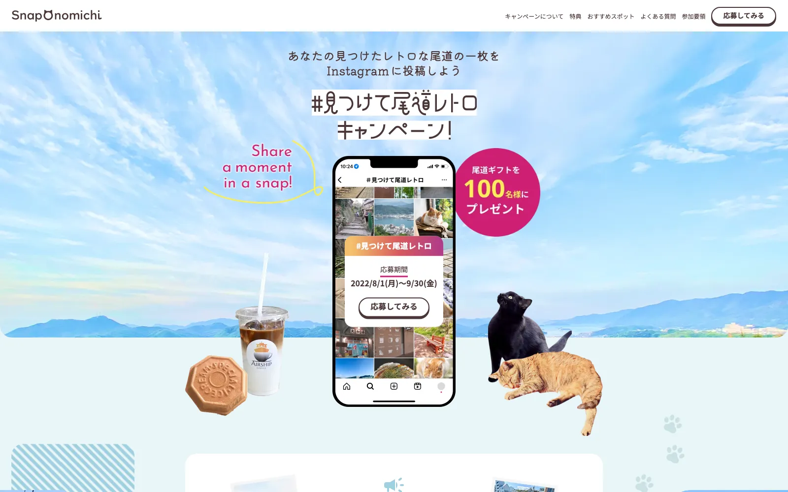
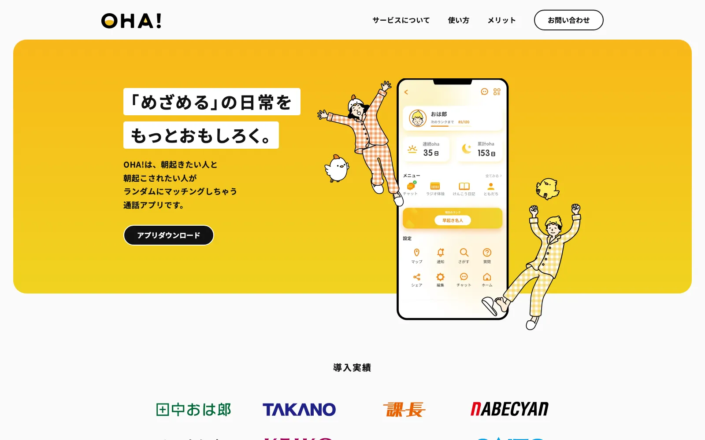
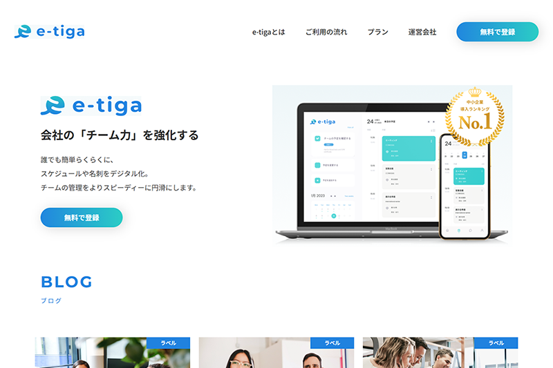
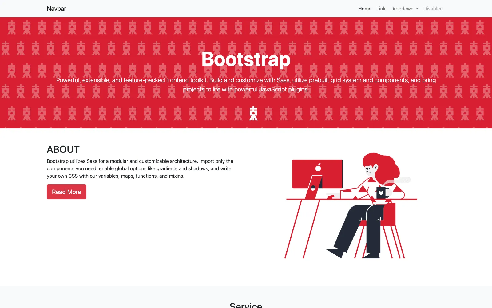

Worksに戻る


Works — Coding
カンプからサイト制作コーディング練習 5作品
オンラインスクールの課題や自主制作として取り組んだ、デザインカンプ（完成デザインデータ）からのコーディング練習5作品のまとめです。いずれもSass（SCSS）＋BEM設計と、素のJavaScriptでのUI実装を軸にしています。

Purpose制作の目的
デザインカンプからのコーディング練習に、スクール課題・ライブコーディング・自主制作と段階を踏んで繰り返し取り組みました。ピクセルパーフェクトな再現性、デザイン意図の正確な理解、UI/UXの基本的な考え方を習得し、最終的には補助を受けずに一通りのサイトを組み切れる状態になることを目的としています。
Codingコーディングについて
いずれの作品も、Sass（SCSS記法）のファイル分割とBEMに基づく命名規則で、保守性・拡張性の高いスタイル設計を徹底しました。JavaScriptはjQueryに頼らず素のJSで実装しています。共通して取り組んだ技術要素は次のとおりです。
- 大規模開発を想定し、SCSSをコンポーネント・役割ごとにファイル分割。BEMで命名規則を統一
- ドロワーメニュー・アコーディオン・モーダル・スムーススクロール・スクロールアニメーションを素のJavaScriptで実装
- スライダーはSwiperを採用し、無限ループ（無限スクロール）の設定にも挑戦
- フォームの入力値チェック（バリデーション）を実装
- Figmaからサイズ・余白・カラーコードを正確に抽出し、レスポンシブ対応まで含めて再現
Gallery制作した5サイト



Bootstrapでのサイト制作
この1本だけテーマが異なり、カスタムCSS・JavaScriptを書かず、Bootstrapの標準機能（グリッドシステム・ユーティリティクラス）だけでどこまで組めるかを試した練習です。
サイトを見るこの作品の制作意図や工夫について、詳しくお話しできます。お気軽にご連絡ください。
お問い合わせ